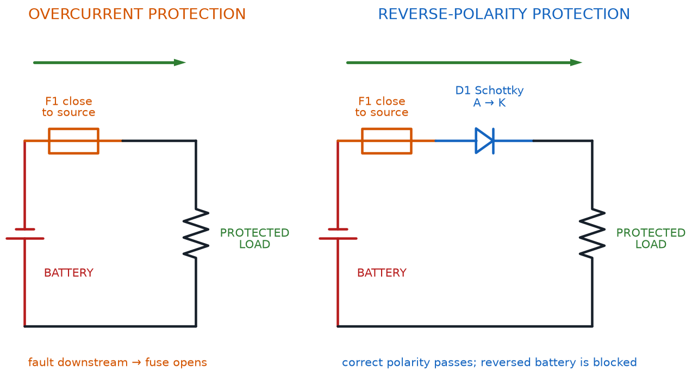

Circuit Analysis, Kirchhoff's Laws, and Energy
Summary
This chapter deepens circuit-analysis intuition with Kirchhoff's Current and Voltage Laws, AC vs. DC power, and the beginnings of electrical energy concepts. Students learn to reason about how voltage and current distribute around a complete circuit, a skill used constantly once real components are introduced.
Concepts Covered
This chapter covers the following 19 concepts from the learning graph:
- Ohm
- Volt
- Ampere
- Watt
- Milliampere
- Microampere
- Kilohm
- Megohm
- Coulomb
- Milliwatt
- Overcurrent
- Fuse Protection
- Reverse Polarity Damage
- Static Discharge
- Battery Safety
- Short Circuit Risk
- Node Voltage
- Loop Current
- Series Resistance
Prerequisites
This chapter builds on concepts from:
- 1. Electricity Basics: Voltage, Current, and Resistance
- 2. Current, Charge, Units, and Electrical Safety
Reading the Fine Print
 Welcome back, builder! Flip over any resistor, LED, or battery in your kit and you'll see tiny numbers and letters printed right on it. This chapter hands you the power to read every single one of them, and to know exactly why a fuse, a fresh battery, and a little static-electricity caution all matter before you power up. Let's light it up!
Welcome back, builder! Flip over any resistor, LED, or battery in your kit and you'll see tiny numbers and letters printed right on it. This chapter hands you the power to read every single one of them, and to know exactly why a fuse, a fresh battery, and a little static-electricity caution all matter before you power up. Let's light it up!
The Big Four Units, Named After Real People
Chapters 1 and 2 already introduced voltage, current, resistance, and power in everyday language. It's time to meet their official units up close, because every part in your kit prints its ratings using these exact names. Here's a fun fact that makes them easier to remember: all four base units are named after real scientists who studied electricity.
The ohm (symbol Ω) measures resistance and honors Georg Simon Ohm, the German physicist behind Ohm's Law. The volt (symbol V) measures voltage and honors Alessandro Volta, the Italian scientist who built the first practical battery. The ampere (symbol A, often just called an "amp") measures current and honors André-Marie Ampère, a French physicist who studied how electric current creates magnetism. The watt (symbol W) measures power and honors James Watt, the Scottish engineer famous for improving the steam engine.
Four Famous Names
 Notice the pattern: when a unit is named after a person, we write the unit with a lowercase letter (volt, ohm) but its symbol with a capital letter (V, Ω). It's a small detail, but once you notice it, you'll never mix up "5 volts" and "5 Volta" again — only one of those is a person!
Notice the pattern: when a unit is named after a person, we write the unit with a lowercase letter (volt, ohm) but its symbol with a capital letter (V, Ω). It's a small detail, but once you notice it, you'll never mix up "5 volts" and "5 Volta" again — only one of those is a person!
Prefixes: Talking About Very Big and Very Small Numbers
Real circuits deal with numbers that are sometimes tiny and sometimes huge. An LED might use twenty-thousandths of an amp, while a pull-up resistor might have a million ohms of resistance. Writing all those zeros every time would get exhausting fast, so electronics uses a small set of metric prefixes as shorthand — the same prefixes you may have seen in "kilometer" or "milliliter."
Here are the four prefixes you'll see constantly in this course:
- milli- (symbol m) means one-thousandth (÷ 1,000) of a unit
- micro- (symbol µ) means one-millionth (÷ 1,000,000) of a unit
- kilo- (symbol k) means one thousand times (× 1,000) a unit
- mega- (symbol M) means one million times (× 1,000,000) a unit
Prefix Multipliers
where:
- a "unit" here stands for any base unit — amp, ohm, watt, or volt
- moving from a base unit to milli- means multiplying by 1,000
- moving from a base unit to micro- means multiplying by 1,000,000
Once you know these four prefixes, you can read the label on any component in your $50 kit, from a resistor's ohms to an LED's milliamps.
Small Currents: Milliamperes and Microamperes
Most of the currents flowing through your breadboard projects are small — far less than one full amp. That's exactly why the milliampere (mA), one-thousandth of an amp, is the unit you'll see most often. A typical LED in your kit glows brightly on about 20 mA, and a small DC motor might draw somewhere between 100 and 250 mA while spinning.
Currents can get even smaller than that. The microampere (µA), one-millionth of an amp, describes truly tiny trickles of current — the kind a sensor or a chip might draw while sitting idle, quietly waiting for something to happen.
Milliamperes to Amperes
where:
- \( I_{(A)} \) is the current in amperes
- \( I_{(mA)} \) is the same current expressed in milliamperes
For example, an LED drawing 20 mA is really only drawing \( 20 \div 1000 = 0.02 \) amps — a small enough current that a single AA battery can power dozens of LEDs before it runs out.
Big Resistance Values: Kilohms and Megohms
Resistors don't stop at a few dozen ohms. Many of the resistors in your kit are rated in the thousands of ohms, which is why the kilohm (kΩ), equal to 1,000 ohms, shows up on almost every resistor color-code chart. A very common current-limiting resistor for an LED might be labeled "1k" — meaning 1,000 ohms, or 1 kilohm.
Some components use resistance values far larger still. A photoresistor sitting in a dark room, or certain resistors used to keep an input pin from "floating," can measure in the megohm (MΩ) range — a full million ohms. The prefixes work exactly the same way here as they did for current, just applied to resistance instead.
Kilohms and Megohms
where:
- \( \text{k}\Omega \) is kilohms, a common unit for resistors in your kit
- \( \text{M}\Omega \) is megohms, used for very large resistance values
- \( \Omega \) is the base unit, the ohm
Small Amounts of Power: The Milliwatt
Power follows the same pattern. Most components in a beginner's kit convert only a small fraction of a watt into light, motion, or sound, so their power ratings are usually given in milliwatts (mW), one-thousandth of a watt. A small LED might be rated for around 60 mW of power, which is why it can run safely off a couple of AA batteries without ever feeling warm.
Charge in Coulombs: What a Battery Actually Stores
Chapter 2 introduced electric charge as the basic property being pushed through a circuit. Now meet its official unit: the coulomb (symbol C), named after French physicist Charles-Augustin de Coulomb. One coulomb is a genuinely enormous amount of charge — about 6.24 quintillion electrons' worth — so a single coulomb almost never shows up all at once in a beginner circuit. Instead, charge, current, and time are linked by a simple equation.
Electric Charge
where:
- \( Q \) is electric charge, measured in coulombs (C)
- \( I \) is current, measured in amperes (A)
- \( t \) is time, measured in seconds (s)
This equation is exactly why a battery's rating (often printed in milliamp-hours, or mAh) tells you roughly how long it can supply a given current before it runs dry — the battery is really just a portable stockpile of coulombs, released a little at a time.
The table below gathers every unit and prefix from this section into one reference you can bookmark and return to throughout the course.
| Unit | Symbol | Named After | What It Measures |
|---|---|---|---|
| Ohm | Ω | Georg Ohm | Resistance |
| Volt | V | Alessandro Volta | Voltage (electrical push) |
| Ampere | A | André-Marie Ampère | Current (rate of charge flow) |
| Watt | W | James Watt | Power (rate of doing work) |
| Coulomb | C | Charles-Augustin de Coulomb | Electric charge |
| Prefix | Symbol | Multiplier | Example |
|---|---|---|---|
| micro- | µ | ÷ 1,000,000 | 5 µA — a sleeping sensor's current draw |
| milli- | m | ÷ 1,000 | 20 mA — a typical LED's current |
| (base unit) | — | × 1 | 9 V — a fresh 9-volt battery |
| kilo- | k | × 1,000 | 1 kΩ — a common LED resistor |
| mega- | M | × 1,000,000 | 1 MΩ — a very high resistance value |
Try the interactive tool below to build a feel for how these prefixes trade off against each other — enter a value, switch its prefix, and watch the equivalent values update instantly across the whole ladder.
Diagram: Unit Prefix Value Converter
Run the Unit Prefix Value Converter fullscreen
Unit Prefix Value Converter
Type: microsim
sim-id: unit-prefix-converter
Library: p5.js
Status: Specified
Template: https://github.com/dmccreary/intro-to-physics-course/tree/main/docs/sims/metric-scale-zoom
Purpose: Help learners build fluency converting a single quantity across the micro-, milli-, base, kilo-, and mega- prefixes used throughout the course.
Bloom Taxonomy: Apply (L3). Bloom Verb: calculate.
Learning objective: Calculate the equivalent value of a current, resistance, or power reading across microampere/milliampere/ampere, ohm/kilohm/megohm, and milliwatt/watt scales, by entering a number and switching its prefix on an interactive ladder.
Canvas layout: - Top: a dropdown to choose the quantity type (Current, Resistance, or Power) - Center: a vertical "prefix ladder" showing five rungs — micro, milli, base, kilo, mega — each rendered as a horizontal bar - Bottom: a numeric input box and a live equivalent-value readout for every rung
Visual elements: - Five rungs, one per prefix, labeled with symbol (µ, m, none, k, M) and full name - The rung matching the entered value highlighted in orange - A readout beside every rung showing the same quantity at that rung's scale (e.g., entering "20" at milliamps shows "0.02 A" on the base rung and "20,000 µA" on the micro rung)
Interactive controls: - Dropdown: quantity type (Current, Resistance, or Power) - Numeric input: the value to convert, plus a selector for which rung it represents - Button: "Try a Real Example" cycles through preset values from this chapter (20 mA LED current, 1 kΩ resistor, 60 mW LED power, 5 µA sleep current, 1 MΩ pull-up resistor)
Default parameters: - Quantity type: Current; entered value: 20, at the milli- rung (a typical LED)
Data Visibility Requirements: Stage 1 (default): Show 20 mA entered, with every rung's equivalent value displayed at once Stage 2 (value or rung changed): Recalculate every rung's readout immediately, so the connection between them is obvious Stage 3 ("Try a Real Example" clicked): Drop a real component value from this chapter into the ladder
Instructional Rationale: This Apply-level objective calls for a parameter-exploration tool, not an animation. Updating all five rungs at once, instead of one conversion at a time, builds the mental model needed to read any label in the kit at a glance.
Color scheme: Blue rungs on a light background, with the active rung in warm orange, matching the book's theme colors.
Responsive behavior: Rungs stack vertically at any width; controls stay full-width and touch-friendly on narrow screens.
Implementation: p5.js, with a simple multiply/divide-by-1000 conversion function shared across all three quantity types, and rung bars redrawn each frame from the current input value.
Three Steps at a Time
 Here's my favorite shortcut: every prefix jump — milli to base, base to kilo, kilo to mega — is exactly the same move, sliding the decimal point three places. Once that clicks, you can convert any label in your kit in your head, no calculator required. I promise this trick isn't ohm-work at all.
Here's my favorite shortcut: every prefix jump — milli to base, base to kilo, kilo to mega — is exactly the same move, sliding the decimal point three places. Once that clicks, you can convert any label in your kit in your head, no calculator required. I promise this trick isn't ohm-work at all.
From Units to Safety: Protecting Real Components
Knowing the units on a part is only half the job — the other half is knowing what happens when a circuit asks a part to handle more than it was built for. The rest of this chapter covers the handful of hazards every builder should recognize, and the simple habits that keep your kit (and you) safe every time you power up.
Overcurrent and Fuse Protection
Overcurrent happens whenever more current flows through a component than it's rated to safely handle. Remember from Chapter 2 that current pushing through resistance always makes heat — and overcurrent means that heat-making process runs out of control. A part rated for 20 mA that's suddenly asked to carry 200 mA will heat up fast, and if nothing stops it, that part can be permanently damaged in seconds.
Bigger electronics projects — cars, appliances, wall-powered devices — guard against this with fuse protection: a fuse is a small, sacrificial component containing a thin strip of metal designed to melt and break the circuit the instant current climbs too high. Think of a fuse as a deliberately weak link, built to fail on purpose so that nothing more expensive has to. Your low-voltage breadboard kit rarely needs an actual fuse, since AA batteries and USB supplies can't push out much current in the first place — but the concept matters everywhere, from car headlights to household wiring, and it's the same idea behind the resettable "polyfuses" built into many USB ports.
Overcurrent Is the Root of Most Trouble
 Almost every "magic smoke" story in electronics traces back to overcurrent in disguise — a missing resistor, a wrong value, or a short. If you always ask "what's limiting the current here?" before you power up, you'll catch the vast majority of beginner mistakes before they ever happen.
Almost every "magic smoke" story in electronics traces back to overcurrent in disguise — a missing resistor, a wrong value, or a short. If you always ask "what's limiting the current here?" before you power up, you'll catch the vast majority of beginner mistakes before they ever happen.
Diagram: Fuse and Reverse-Polarity Protection Circuits

Reverse Polarity Damage
Chapter 2 mentioned that flipping a battery backward in a simple LED-and-resistor circuit is harmless at these low voltages — the LED just won't light. But not every part in your kit is that forgiving. Reverse polarity damage describes real, permanent harm caused by connecting power backward into a component that depends on current flowing one specific direction. Later in this course you'll work with integrated circuits like the 555 timer and the 74HC595 shift register, and chips like these can be damaged by reversed power even at the safe voltages used in this course, because their internal circuitry expects current to arrive from one particular direction.
The safe habit is the same one you already learned for batteries: check plus and minus before every single power-up, for every single component, not just the ones you're worried about.
A Habit, Not a Fear
 This isn't about being scared of your kit — it's about building one small habit that becomes automatic. Glance at the plus and minus marks before every power-up, every time, and reverse polarity damage becomes something that essentially never happens to you.
This isn't about being scared of your kit — it's about building one small habit that becomes automatic. Glance at the plus and minus marks before every power-up, every time, and reverse polarity damage becomes something that essentially never happens to you.
Static Discharge
Walk across a carpet in dry weather and reach for a doorknob, and you might feel a tiny spark jump between your finger and the metal. That spark is static discharge: a sudden release of built-up electric charge that has nowhere else to go. You barely notice it on a doorknob, but many electronic chips — especially the transistors, the 555 timer, and the shift register you'll meet later in this course — contain microscopic internal structures that a static spark can destroy instantly, long before the spark is strong enough for a person to even feel.
A few simple habits keep static discharge from ever becoming a problem:
- Touch a grounded metal object (like a bare metal table leg or a doorknob) before handling a sensitive chip, to drain off any static charge from your body first
- Store loose ICs and transistors in their original anti-static packaging or foam, not loose in a pocket or on a plastic tray
- Avoid working on thick carpet in very dry weather when handling your most sensitive components
Invisible but Real
Static discharge is sneaky because you often can't see, hear, or feel the spark that does the damage — it can be far too small to notice. That's exactly why the "touch something grounded first" habit is worth building now, before you start handling the pickier chips later in this course.
Battery Safety Beyond the Basics
Chapter 2 covered the core battery habits: check polarity, and never let a bare wire short the terminals together. Battery safety covers a few more habits worth locking in now, before batteries become a routine part of every project you build.
- Never mix old and new batteries, or different battery types, in the same battery pack — the mismatched cells can push against each other and drain unevenly
- Never puncture, crush, or open a battery, even a small, "dead" one
- Keep batteries away from heat sources and out of direct sunlight for long periods
- If a battery ever feels hot, looks swollen, or is leaking a crusty residue, stop using it immediately and set it aside for proper recycling
- Recycle batteries rather than tossing them in the regular trash — most hardware and electronics stores accept old batteries for free
Batteries Like Routine
A good rule of thumb: treat every battery in your kit the way you'd want someone to treat your favorite tool — stored properly, never abused, and retired the moment something looks off. Batteries that are treated well last longer and behave predictably every time.
Short Circuit Risk
Chapter 1 defined a short circuit as current finding an unintended, nearly-zero-resistance shortcut around the parts meant to control it. Now you have the vocabulary to see exactly why that's risky: since Ohm's Law says current rises as resistance falls, a resistance near zero sends current soaring — this is short circuit risk in a nutshell. That current spike is precisely the scenario overcurrent protection and fuses exist to catch. In a car or a wall-powered appliance, an unprotected short can start a fire; on your breadboard's low-voltage supply, the real-world risk is smaller, but a short still drains a battery in seconds and can make a thin wire uncomfortably hot to the touch.
Explore the interactive hazard board below. Click each icon to see exactly how that hazard damages a circuit, and what protects against it.
Diagram: Circuit Safety Hazard Explorer
Circuit Safety Hazard Explorer
Type: infographic
sim-id: circuit-safety-hazard-explorer
Library: p5.js
Status: Specified
Purpose: Help learners connect each of the four circuit hazards introduced in this chapter to its cause, its consequence, and the specific habit or component that protects against it.
Bloom Taxonomy: Understand (L2). Bloom Verb: explain.
Learning objective: Explain how overcurrent, reverse polarity, static discharge, and short circuits damage components, and what protection or habit prevents each, by clicking each hazard icon to reveal cause, consequence, and protection.
Canvas layout: - Top: a row of four hazard icons — flame for Overcurrent, flipped battery for Reverse Polarity, lightning spark for Static Discharge, bridging wire for Short Circuit - Bottom: an infobox panel that fills in with Cause / What Happens / Prevention text for whichever icon was last clicked
Visual elements: - Each icon in a rounded button labeled underneath; the selected icon highlighted with an orange outline - The infobox divided into three labeled rows: "Cause," "What Happens," and "How to Prevent It"
Interactive controls: - Click any hazard icon to load its explanation into the infobox - Hover over an icon for a one-line preview tooltip - Button: "Reset" clears the infobox to a placeholder
Default parameters: - No icon pre-selected; infobox shows a "Click a hazard to learn about it" placeholder
Behavior when an icon is clicked: - Overcurrent: Cause — "More current flows than a component is rated for." What Happens — "Excess heat builds up and can permanently damage the part." Prevention — "Correctly sized current-limiting resistors, and fuses in larger circuits." - Reverse Polarity: Cause — "Power is connected backward into a polarity-sensitive part." What Happens — "Simple parts just don't work; sensitive chips can be permanently damaged." Prevention — "Always check plus and minus marks before powering up." - Static Discharge: Cause — "Built-up static charge jumps into a chip." What Happens — "Microscopic internal damage, often invisible until the part fails." Prevention — "Touch a grounded metal object before handling chips; store ICs in anti-static packaging." - Short Circuit: Cause — "Current finds a near-zero-resistance shortcut around the intended path." What Happens — "Current spikes rapidly, draining the battery fast and heating wires." Prevention — "Double-check wiring before power-up; this is exactly what fuses protect against."
Data Visibility Requirements: Stage 1 (default): Show all four hazard icons with no selection Stage 2 (icon clicked): Show the three-row Cause / What Happens / Prevention breakdown, replacing the placeholder Stage 3 (all four explored): Reinforce that "cause → consequence → protection" is a repeatable pattern for reasoning about any hazard
Instructional Rationale: This Understand-level objective calls for a click-to-reveal comparison, not a simulation with moving parts. The same three-row structure for every hazard helps learners build one reusable mental model instead of memorizing four unrelated warnings.
Color scheme: Warm orange for the selected icon's highlight; each hazard icon in an intuitive color (red-orange flame, blue/red flipped arrows, yellow lightning bolt, red bridging wire) on a light background.
Responsive behavior: The four icons wrap to a 2x2 grid on narrow screens, with the infobox always appearing below the icon row.
Implementation: p5.js, four clickable icon regions bound to a lookup table of Cause/Consequence/Prevention strings, infobox rendered as an HTML panel below the canvas.
How Engineers Actually Analyze a Circuit
Chapter 2 introduced Kirchhoff's Current Law and Kirchhoff's Voltage Law: current into a junction always equals current out, and voltage drops around a loop always add up to the source voltage. Those two laws are the rulebook. This section introduces the vocabulary engineers actually use while applying that rulebook to a real circuit.
Every point in a circuit where you might want to know the voltage is called a node. The voltage measured at a node, relative to a shared reference point like common ground, is called that node's node voltage. Rather than talking vaguely about "the voltage somewhere in the middle of the circuit," engineers give each node a name and state its exact voltage — for instance, "node A sits at 6 volts."
In a simple series loop, there's only one path for current to take, so there's really only one current value flowing through the entire loop at any moment. Engineers call this the loop current — a single number that describes how much current is circulating around that particular loop.
Finally, when resistors are wired one after another along that same single path, their resistances simply add together. This total is called the series resistance of the loop, and it's the number you plug directly into Ohm's Law to find the loop current.
Total Series Resistance
where:
- \( R_{total} \) is the combined resistance of every resistor in the series loop
- \( R_1, R_2, R_3 \) are the individual resistor values, in ohms
For example, three resistors of 100 Ω, 220 Ω, and 330 Ω wired in series add up to \( 100 + 220 + 330 = 650\ \Omega \) of series resistance. Connect that chain to a 9-volt battery, and Ohm's Law gives the loop current: \( I = V \div R = 9 \div 650 \approx 0.0138 \) amps, or about 13.8 mA.
Once you know the loop current, you can find the node voltage at any point in the chain by subtracting the voltage drops that came before it.
Node Voltage in a Series Chain
where:
- \( V_{node} \) is the voltage at the node in question, measured relative to ground
- \( V_{source} \) is the total voltage supplied by the battery
- \( V_1, V_2 \) are the voltage drops across every resistor between the battery's positive terminal and that node
Try the interactive circuit below. Adjust each resistor in a series chain and watch the loop current, the total series resistance, and every node voltage update together, live.
Diagram: Node Voltage and Series Resistance Chain Builder
Run the Node Voltage and Series Resistance Chain Builder fullscreen
Node Voltage and Series Resistance Chain Builder
Type: microsim
sim-id: node-voltage-series-chain
Library: p5.js
Status: Specified
Template: https://github.com/dmccreary/intro-to-physics-course/tree/main/docs/sims/series-parallel
Purpose: Let learners calculate total series resistance, loop current, and the node voltage at each point in a series chain, by manipulating a live circuit.
Bloom Taxonomy: Apply (L3). Bloom Verb: calculate.
Learning objective: Calculate the total series resistance, the loop current, and the node voltage at each junction of a three-resistor series chain, by adjusting resistor-value sliders and reading live labeled readouts at each node.
Canvas layout: - Top: a single-loop circuit diagram — a battery and three resistors in series — with a labeled node dot (A, B, C) between each pair of components and after the last resistor - Bottom: a control panel with three resistor sliders, a source-voltage slider, and a running summary readout
Visual elements: - Battery symbol labeled with its source voltage - Three resistors in series, each with a slider-driven value shown beside it - Four labeled node dots along the loop, each displaying its live node voltage in a small readout bubble - A summary box showing "Series Resistance: R1 + R2 + R3 = ___ Ω" and "Loop Current: ___ A"
Interactive controls: - Sliders: Resistor 1, Resistor 2, Resistor 3 (10–1000 ohms each), and Source voltage (1.5–9 V) - Hover over any node dot for a tooltip explaining what "node voltage" means at that point - Button: "Load Example" sets the sliders to the chapter's worked example (100 Ω, 220 Ω, 330 Ω, 9 V)
Default parameters: - Resistor 1: 100 Ω, Resistor 2: 220 Ω, Resistor 3: 330 Ω, Source voltage: 9 V
Data Visibility Requirements: Stage 1 (default circuit): Show the worked-example values with all four node voltages and the series-resistance/loop-current summary visible Stage 2 (slider adjusted): Recalculate every downstream node voltage immediately, so learners see how one resistor change shifts every node after it Stage 3 (node hovered): Show a tooltip stating that node's exact voltage and confirming it equals the source voltage minus every voltage drop before it
Instructional Rationale: This Apply-level objective calls for a parameter-exploration calculator with live numeric readouts, not a passive animation. Labeling every node and updating its voltage the instant a slider moves turns "node voltage" from an abstract term into something learners watch change.
Color scheme: Warm orange for node-voltage readouts, cool blue for resistor bars, matching this book's voltage/current color logic.
Responsive behavior: The diagram scales to fill the available width; sliders stack into a single touch-friendly column on narrow screens.
Implementation: p5.js, using a simple series-circuit math model (sum resistors, divide for loop current, subtract cumulative voltage drops for each node), redrawn each frame from the current slider values.
Same Laws, New Vocabulary
Node voltage, loop current, and series resistance aren't new physics — they're just precise names for ideas you already learned through Kirchhoff's Laws in Chapter 2. Once you can point at any spot in a circuit and say its node voltage with confidence, you're reasoning about circuits the same way a real engineer does.
Chapter Summary: Key Takeaways
- The four base units — ohm, volt, ampere, and watt — are each named after a real scientist, and coulomb is the unit of electric charge, linked to current and time by \( Q = I \times t \)
- The metric prefixes milli- (÷1,000) and micro- (÷1,000,000) shrink a unit; kilo- (×1,000) and mega- (×1,000,000) grow it — giving you milliampere, microampere, kilohm, megohm, and milliwatt as everyday units in this course
- Overcurrent damages components by producing more heat than they can safely handle; fuse protection is a sacrificial component designed to break the circuit before that damage happens
- Reverse polarity damage and static discharge are two hazards that matter especially for sensitive chips you'll meet later in this course, and both are prevented by simple, repeatable habits
- Battery safety means never mixing battery types, never puncturing or shorting a battery, and recycling batteries that look swollen, hot, or leaking
- Short circuit risk is Ohm's Law in action: resistance near zero sends current soaring, which is exactly what overcurrent protection exists to catch
- A node voltage is the voltage at a specific point in a circuit; a loop current is the single current flowing around a series loop; series resistance is the sum of every resistor along that loop — and together, these three ideas are how engineers put Kirchhoff's Laws to work on a real circuit
You can now read every label in your kit at a glance, recognize the hazards that matter, and talk about any point in a circuit using the same vocabulary a professional engineer would reach for.
Fully Charged!
 Nice wiring, builder! You just unlocked the power to read any label, spot any hazard, and calculate the voltage at any point in a circuit — that's a serious upgrade in your circuit-analysis toolkit. Grab your kit, check those battery marks, and get ready to put every one of these ideas to work. Current's flowing your way!
Nice wiring, builder! You just unlocked the power to read any label, spot any hazard, and calculate the voltage at any point in a circuit — that's a serious upgrade in your circuit-analysis toolkit. Grab your kit, check those battery marks, and get ready to put every one of these ideas to work. Current's flowing your way!